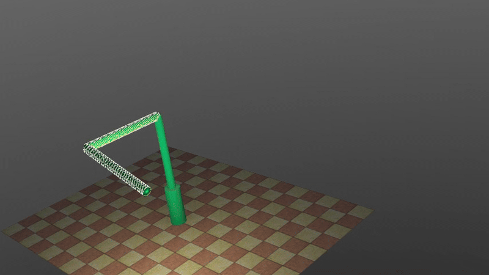
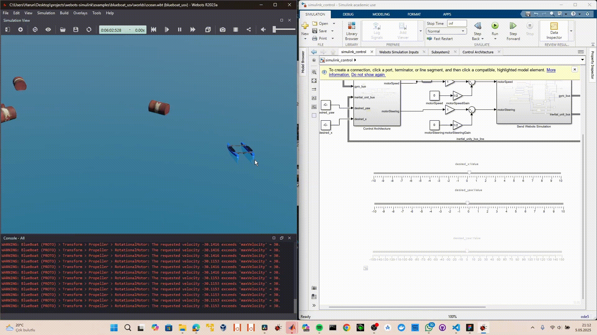

Webots-Simulink Bridge Documentation¶
Welcome to the documentation for the Webots-Simulink Bridge, a framework that enables communication between the Webots robotic simulator and Simulink. This bridge allows users to simulate and control robotic systems using Simulink while visualizing their behavior in Webots.
Overview¶
The Webots-Simulink Bridge establishes a bidirectional communication channel between the Webots physics simulator and MATLAB/Simulink control environment. This integration enables:
| Capability | Description |
|---|---|
| Physics Simulation | Webots provides realistic 3D dynamics, collision detection, and sensor modeling |
| Control Design | Simulink enables block-diagram based controller development with state-space, PID, and advanced control methods |
| Real-Time Data Exchange | Sensor readings (IMU, LiDAR, GPS, encoders) flow to Simulink; motor commands return to Webots |
| ROS 2 Deployment | Export validated Simulink controllers as ROS 2 packages for physical robot deployment |
Available Examples¶
Control Systems¶

Classic control theory example demonstrating stabilization of an inherently unstable system using LQR control.

Advanced control system with rotary arm and pendulum dynamics, featuring swing-up and balancing control.
Aerial Vehicles¶

Nano quadcopter simulation with full 6-DOF control, cascaded PID architecture, and sensor integration.

Professional quadcopter drone with advanced flight control and GPS navigation capabilities.
Lighter-than-air vehicle simulation with buoyancy control and 3D navigation.
Ground Vehicles¶

Popular educational mobile robot platform with differential drive kinematics and SLAM capabilities.

Four-wheel drive mobile robot for autonomous navigation research with skid-steer kinematics.

Agricultural vehicle simulation with Ackermann steering geometry and precision agriculture applications.
Autonomous vehicle simulation with ADAS features, lane keeping, and adaptive cruise control.
Marine Vehicles¶

Unmanned surface vehicle for marine robotics with differential thrust control and GPS navigation.

Industrial Robots¶
6-DOF collaborative robot arm with forward/inverse kinematics and trajectory planning.
Humanoid Robots¶
Bipedal humanoid robot with ZMP-based walking control and full-body motion planning.
Legged Robots¶
Boston Dynamics-style quadruped robot with MPC-based locomotion control.
Swarm Robotics¶
Multi-robot swarm simulation with Reynolds flocking rules and collective behavior.
Educational Robots¶
Compact differential drive robot for research and education with extensive sensor suite.
Educational robot with reactive control architecture and visual programming support.
Multi-sensor educational robot platform with EKF-based localization.
Key Features¶
| Feature | Description |
|---|---|
| 19 Robot Examples | Pre-configured models for drones, mobile robots, marine vehicles, manipulators, and control systems |
| State-Space Modeling | Each example includes linearized A, B, C, D matrices for controller design |
| Cascaded Control | Hierarchical control architectures with position, velocity, and attitude loops |
| Sensor Fusion | Integration of LiDAR, IMU, GPS, encoders, and cameras with Extended Kalman Filter examples |
| ROS 2 Compatibility | Export Simulink models as ROS 2 nodes using MATLAB Coder |
Quick Start¶
Follow these four steps to begin using the Webots-Simulink Bridge:
Step 1: Install Prerequisites¶
Ensure that MATLAB/Simulink (R2020b or later) and Webots (R2023a or later) are installed on your system. Both applications must be properly licensed and configured. See the Requirements page for version compatibility and system specifications.
Step 2: Configure Your Environment¶
Set up the required environment variables and add the bridge files to your MATLAB path. The Setup Guide provides platform-specific instructions for Windows, macOS, and Linux.
Step 3: Establish the Connection¶
Open your Webots world file and configure MATLAB as the external controller. The Connecting Guide explains how to initialize the TCP/IP communication between Webots and Simulink.
Step 4: Run a Simulation¶
Load a Simulink model and start the Webots simulation. Sensor data flows from Webots to Simulink, and control commands return to Webots in real-time. The Running Simulations guide provides detailed instructions for each example project.
Project Architecture¶
webots-simulink/
├── examples/ # Example projects
│ ├── inverted_pendulum/ # Control system examples
│ ├── rotary_inverted_pendulum/
│ ├── crazyflie/ # Aerial vehicles
│ ├── mavic_2_pro/
│ ├── blimp/
│ ├── turtlebot3/ # Ground vehicles
│ ├── scout_v2.0/
│ ├── wheel_chair/
│ ├── tractor/
│ ├── tesla_model3/
│ ├── blueboat_usv/ # Marine vehicles
│ ├── pirana_usv/
│ ├── ur5e/ # Industrial robots
│ ├── nao/ # Humanoid robots
│ ├── spot/ # Legged robots
│ ├── epuck_swarm/ # Swarm robotics
│ ├── khepera_iv/ # Educational robots
│ ├── thymio_ii/
│ └── firebird_6/
├── docs/ # Documentation
└── mkdocs.yml # Documentation config
Documentation Structure¶
Installation¶
| Page | Description |
|---|---|
| Requirements | Software versions, operating system support, and hardware specifications |
| Setup | Environment configuration for Windows, macOS, and Linux |
Usage¶
| Page | Description |
|---|---|
| Connecting | TCP/IP communication setup between Webots and Simulink |
| Running | Starting simulations and monitoring data exchange |
| Customization | Modifying the bridge for custom robot models |
Advanced Topics¶
| Page | Description |
|---|---|
| Debugging | Diagnosing communication errors and timing issues |
| ROS 2 Export | Converting Simulink models to ROS 2 nodes for hardware deployment |
Reference¶
| Page | Description |
|---|---|
| Troubleshooting | Common errors and their solutions |
| FAQ | Frequently asked questions |
| Contributing | Guidelines for adding new robot examples |
Citation¶
If you use this work in your research, please cite:
Kurt, H., Cayir, A., & Erkan, K. (2025). Simulation Based Control Architecture Using Webots and Simulink. arXiv. https://doi.org/10.48550/ARXIV.2505.02081